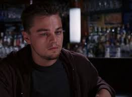
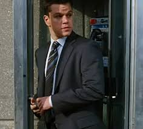
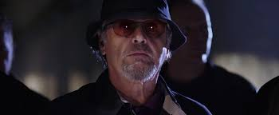

In South Boston, the state police force is waging war on Irish-American organized crime. Young undercover cop Billy Costigan (Leonardo DiCaprio) is assigned to infiltrate the mob syndicate run by gangland chief Frank Costello (Jack Nicholson). While Billy quickly gains Costello's confidence, Colin Sullivan (Matt Damon), a hardened young criminal who has infiltrated the state police as an informer for the syndicate is rising to a position of power in the Special Investigation Unit. Each man becomes deeply consumed by their double lives, gathering information about the plans and counter-plans of the operations they have penetrated. But when it becomes clear to both the mob and the police that there is a mole in their midst, Billy and Colin are suddenly in danger of being caught and exposed to the enemy - and each must race to uncover the identity of the other man in time to save themselves. But is either willing to turn on their friends and comrades they've made during their long stints undercover?
Who's The Rat? |
|
|---|---|
|  |  |
|  | |